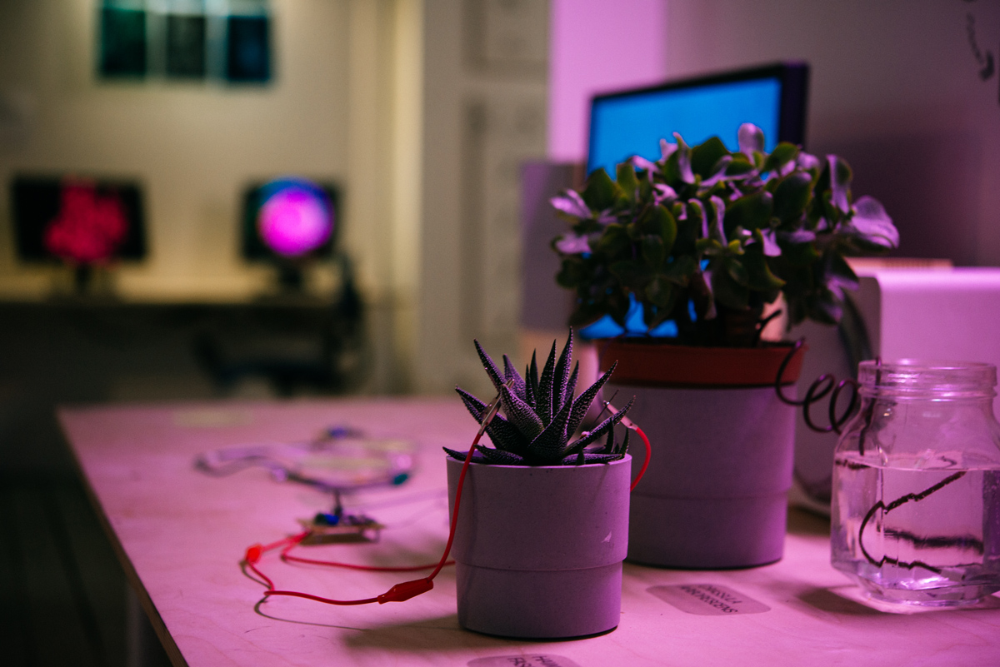
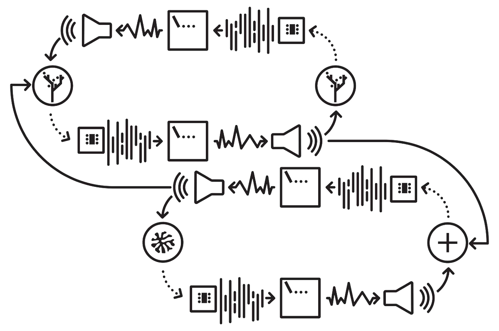
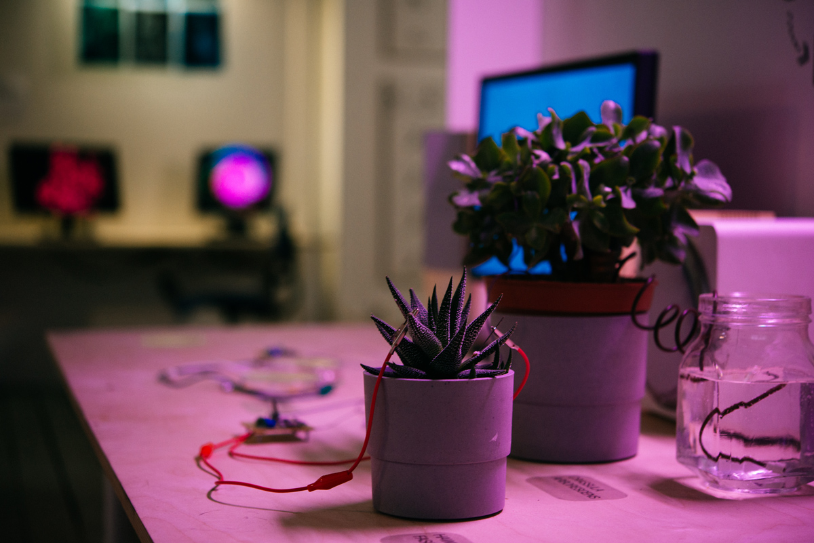
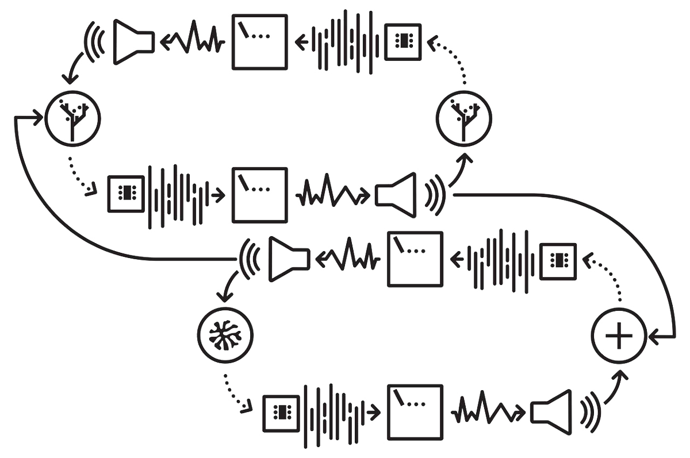

hypercycle.Inventory of Shimmers, Moscow, 2019
sound installation with plants interfaces
The lived but non-articulated experience of everyday life, known as affect, stems from actual material conditions. Due to quantum uncertainty, affect is present at every level of matter, fragmenting and blurring the boundaries between species, living and non-living things, the body and the environment. In Shane Carruth's film Upstream Color two main characters are controlled by a parasite whose life cycle consists of three phases: from humans it migrates to pigs, from pigs it goes to orchids and then returns to humans, surreptitiously weaving all three into the workings of an eternal organism. The underlying challenge is to learn to recognize the traces of natural bodies' and technological artifacts' material agency (since technology is material and generative, affect is inseparable from technological flows). This requires the ability to experience impersonal affect: to notice both infra-thin and distinct manifestations of the rich diversity of life in its all-absorbing closeness, as well as to trace hidden connections between bodies and phenomena. In Hypercycle, the role of the eternal organism, or the "virus", is performed by the micro-pulsation of currents and vibrations generated by mold and plants in response to the environment. Each participant in the cycle transmits the flow and transforms the sound ecosystem. The thing surrounds the thing surrounded: the organic-technological assembly becomes a topography of weak influences and uncertainties.
 


